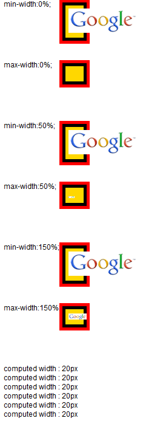
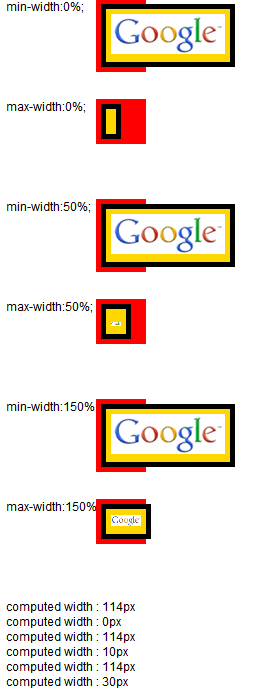
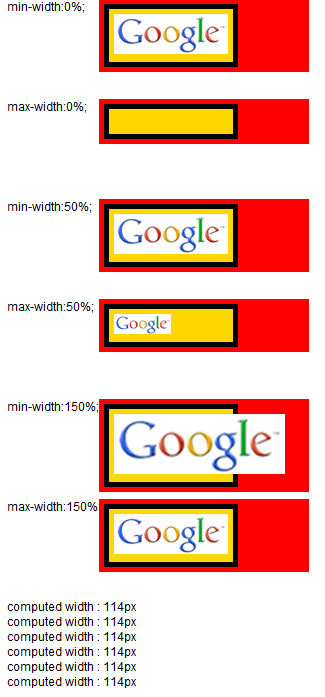
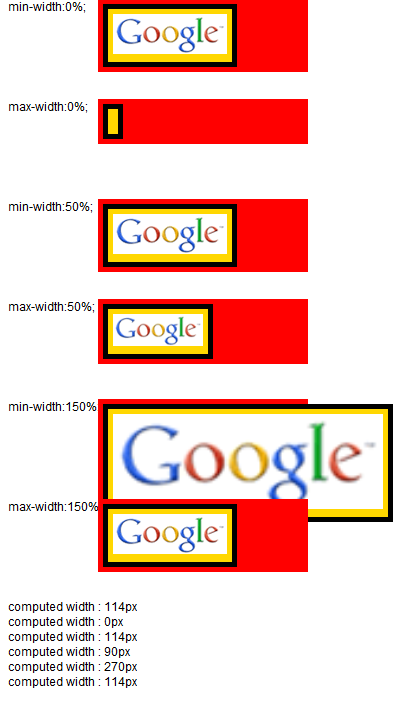

RD8027: 各浏览器中 'min-width' 或 'max-width' 值单位为百分比的 IMG 元素的包含块的 'shrink-to-fit' 算法存在差异
标准参考
1. IMG 元素宽度算法
IMG 元素为拥有内在宽度的内联替换元素，CSS 2.1 第10章明确规定了内联替换元素的宽度算法： 如果元素的 'width' 和 'height' 特性计算值为 'auto' 且元素拥有内在宽度，则使用该内在宽度作为 'width' 的使用值。
关于内联替换元素的宽度计算的更多信息，请参考 CSS 2.1 10.3.2 Inline, replaced elements。
2. 'min-width' 和 'max-width'
'min-width' 和 'max-width' 限定内容宽度的范围。定义值如下：
- <length>:指定一个固定的最小或最大的使用宽度；
- <percentage>:指定一个确定使用值的百分比。百分比的计算基于生成框的包含块的宽度。如果包含块的宽度是负值，则其使用值是0。 CSS 2.1 没有定义若包含块的宽度依赖于其内元素的宽度时如何布局；
- none:（仅用于'max-width'）对框的宽度没有限制。
下述算法描述了这两个特性如何影响 'width' 特性的使用值：
- 首先根据 CSS 2.1 10.3 Calculating widths and margins 中定义的规则计算得到一个临时的使用宽度值；
- 如果临时的宽度使用值大于 'max-width' 特性指定的值，则再应用第一条中的规则将 'max-width' 的计算值作为 'width' 特性的计算值；
- 如果结果宽度值小于 'min-width' 特性值，则再应用第一条中的规则将 'min-width' 的值作为 'width' 特性的计算值。
关于 'min-width' 和 'max-width' 的更多信息，请参考 CSS 2.1 10.4 Minimum and maximum widths: 'min-width' and 'max-width'。
3. 'shrink-to-fit' 算法
shrink-to-fit 可以理解为 "收缩至合适" ，代表了浏览器对于计算后宽度为 'auto' 时的非替换浮动元素宽度计算所要遵循的标准。此外除了非替换浮动元素，对非替换绝对定位元素、非替换行内块元素的宽度为 auto 时也遵循此计算方式。
根据 W3C CSS2.1 规范中的描述，shrink-to-fit 的宽度计算方法与 'table-layout' 特性为 'auto'（即自动表格布局）时对于单元格的宽度计算方法类似。大致为：
- 计算格式化内容时除了发生明确的换行外不发生换行的时首选宽度（preferred width），以及首选最小宽度（preferred minimum width），比如，尝试所有可能的换行。而 CSS2.1 没有定义精确的算法。
- 其次，在这种情况下，找出可用宽度（available width），这个宽度为包含块减去 'margin-left'、'border-left-width'、'padding-left'、'padding-right'、'border-right-width'、'margin-right'以及所有相关滚动条的宽度。
综上所述：
shrink-to-fit 的宽度 = min ( max (首选最小宽度, 可用宽度) , 首选宽度)
关于 shrink-to-fit 的更多资料，请参考 CSS2.1 规范 10.3.5 Floating, non-replaced elements 中的内容。
问题描述
当 IMG 元素没有设置 'width' 特性且设置了值单位为百分比的 'min-width' 或 'max-width' 特性， 则在各浏览器中该 IMG 元素的包含块的 'shrink-to-fit' 算法存在差异。
造成的影响
该问题可能导致在视觉展现上各浏览器存在差异，也可能造成页面布局混乱。
受影响的浏览器
| 所有浏览器 |
|---|
问题分析
该问题的核心原因在于各浏览器在对元素采用 'shrink-to-fit' 算法计算宽度的时候， 选取的首选最小宽度和首选宽度不同，因此导致了计算结果的差异。
对于 IE8(S) Firefox Chrome Safari Opera，主要差异来源于首选最小宽度的取值；而 IE7(S) 则比较特殊，下面会单独讨论它的处理方式。 由于 IE6 IE7(Q) IE8(Q) 不支持 'min-width' 和 'max-width' 特性，因此这些浏览器不在本文讨论范围之列。
分析以下代码：
<!doctype html>
<html>
<head>
<style type="text/css">
.abs {
position : absolute;
}
.cont {
width:40px;
background:red;
padding:5px;
position:absolute;
left:100px;
}
.stf {
float:left;
border:5px solid;
padding:5px;
background:gold;
}
</style>
</head>
<body style="background:white;font:12px Arial;">
<div style="position:absolute;top:0;">min-width:0%;</div>
<div class="cont" style="top:0;">
<div id="stf1" class="stf">
<img id="img1" src="google_small.gif" style="min-width:0%;" />
</div>
</div>
<div style="position:absolute;top:100px;">max-width:0%;</div>
<div class="cont" style="top:100px;">
<div id="stf2" class="stf">
<img id="img2" src="google_small.gif" style="max-width:0%;" />
</div>
</div>
<div style="position:absolute;top:200px;">min-width:50%;</div>
<div class="cont" style="top:200px;">
<div id="stf3" class="stf">
<img id="img1" src="google_small.gif" style="min-width:50%;" />
</div>
</div>
<div style="position:absolute;top:300px;">max-width:50%;</div>
<div class="cont" style="top:300px;">
<div id="stf4" class="stf">
<img id="img2" src="google_small.gif" style="max-width:50%;" />
</div>
</div>
<div style="position:absolute;top:400px;">min-width:150%;</div>
<div class="cont" style="top:400px;">
<div id="stf5" class="stf">
<img id="img1" src="google_small.gif" style="min-width:150%;" />
</div>
</div>
<div style="position:absolute;top:500px;">max-width:150%;</div>
<div class="cont" style="top:500px;">
<div id="stf6" class="stf">
<img id="img2" src="google_small.gif" style="max-width:150%;" />
</div>
</div>
<div id="info" style="position:absolute;top:600px;"></div>
<script type="text/javascript">
window.onload = function(){
var $ = function(id){return document.getElementById(id);};
function info(msg){
$("info").innerHTML += "computed width : " + msg + "px<br />";
}
function getComputedStyle(id){
return window.getComputedStyle ? window.getComputedStyle($(id),null) : $(id).currentStyle;
}
var cs1 = getComputedStyle("stf1"), cs2 = getComputedStyle("stf2"), cs3 = getComputedStyle("stf3"),
cs4 = getComputedStyle("stf4"), cs5 = getComputedStyle("stf5"), cs6 = getComputedStyle("stf6");
info($("stf1").offsetWidth - parseInt(cs1.paddingLeft) - parseInt(cs1.paddingRight) - parseInt(cs1.borderLeftWidth) - parseInt(cs1.borderRightWidth));
info($("stf2").offsetWidth - parseInt(cs2.paddingLeft) - parseInt(cs2.paddingRight) - parseInt(cs2.borderLeftWidth) - parseInt(cs2.borderRightWidth));
info($("stf3").offsetWidth - parseInt(cs3.paddingLeft) - parseInt(cs3.paddingRight) - parseInt(cs3.borderLeftWidth) - parseInt(cs3.borderRightWidth));
info($("stf4").offsetWidth - parseInt(cs4.paddingLeft) - parseInt(cs4.paddingRight) - parseInt(cs4.borderLeftWidth) - parseInt(cs4.borderRightWidth));
info($("stf5").offsetWidth - parseInt(cs5.paddingLeft) - parseInt(cs5.paddingRight) - parseInt(cs5.borderLeftWidth) - parseInt(cs5.borderRightWidth));
info($("stf6").offsetWidth - parseInt(cs6.paddingLeft) - parseInt(cs6.paddingRight) - parseInt(cs6.borderLeftWidth) - parseInt(cs6.borderRightWidth));
}
</script>
</body></html>
以上代码分别测试了 IMG 元素的 'min-width' 和 'max-width' 特性值为 0%、50% 和 150% 的情况下各浏览器如何计算其包含块的宽度， 页面底部使用脚本依次得出这些包含块宽度的最终计算值。图片 "google_small.gif" 内在宽度为 114px，DIV.cont 的宽度为 40px， DIV.stf 为浮动元素，它的 'border-width' 和 'padding' 均为 5px，其宽度需要使用 'shrink-to-fit' 算法决定。根据算法公式，我们能得到可用宽度均为 20px。
各浏览器中表现如下：
| IE8(S) Firefox Opera | Chrome Safari | IE7(S) |
|---|---|---|
 |
 |  |
修改 DIV.cont 的宽度为 200px，重新计算各包含块宽度，这时我们能得到可用宽度为 180px，各浏览器中表现如下：
| IE8(S) Firefox Chrome Safari Opera | IE7(S) |
|---|---|
|  |  |
综合以上测试结果，我们可以得出在 IE8(S) Firefox Chrome Safari Opera 下设置了 'min-width' 或 'max-width' 值单位为百分比的 IMG 元素的包含块的 'shrink-to-fit' 算法：
| IE8(S) Firefox Opera | Chrome Safari |
|---|---|
| min( max(图片内在宽度, 可用宽度), 图片内在宽度)1 | min( max(0, 可用宽度), 图片内在宽度) |
注1： 本文中可用宽度分别为 20px 和 180px，图片内在宽度为 114px。
从源码中我们也可以发现 Webkit 在计算 'shrink-to-fit' 的首选最小宽度的时候，当遇到 IMG 元素的 'min-width' 和 'max-width' 值单位为百分比的时候， 会直接将首选最小宽度置为0，这和我们得出的结论是一致的。
关键代码位于 RenderImage.cpp 文件的最底部：
void RenderImage::calcPrefWidths()
{
ASSERT(prefWidthsDirty());
int borderAndPadding = borderAndPaddingWidth();
m_maxPrefWidth = calcReplacedWidth(false) + borderAndPadding;
if (style()->maxWidth().isFixed() && style()->maxWidth().value() != undefinedLength)
m_maxPrefWidth = min(m_maxPrefWidth, style()->maxWidth().value() + (style()->boxSizing() == CONTENT_BOX ? borderAndPadding : 0));
if (style()->width().isPercent() || style()->height().isPercent() ||
style()->maxWidth().isPercent() || style()->maxHeight().isPercent() ||
style()->minWidth().isPercent() || style()->minHeight().isPercent())
m_minPrefWidth = 0;
else
m_minPrefWidth = m_maxPrefWidth;
setPrefWidthsDirty(false);
}
而 IE7(S) 则首先对比 IMG 元素的内在宽度和它的 'min-width'、'max-width'，然后得出一个宽度的计算值， 再使用此计算值作为 'shrink-to-fit' 的首选最小宽度和首选宽度参与计算包含块的宽度计算。
解决方案
在包含块的宽度计算需要依赖其内 IMG 元素时，尽量避免给 IMG 元素的 'min-width' 和 'max-width' 特性设置百分比单位的值。
参见
知识库
相关问题
- RD8022: 各浏览器中宽度为 0% 的 IMG 元素的包含块的 'shrink-to-fit' 算法存在差异
- RX8017: IE 对浮动非替换元素内包含宽度单位为百分比的元素时的 "shrink-to-fit" 宽度算法有误
测试环境
| 操作系统版本: | Windows 7 Ultimate build 7600 |
|---|---|
| 浏览器版本: |
IE7 IE8 Firefox 3.6.10 Chrome 7.0.524.0 dev Safari 5.0.2(7533.18.5) Opera 10.62 |
| 测试页面: | IMG_min-max-width_percent.html |
| 本文更新时间: | 2010-09-21 |
关键字
IMG min-width max-width percentage shrink-to-fit